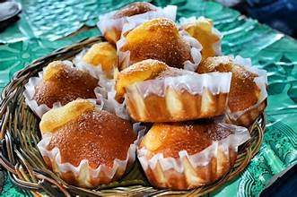
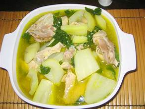
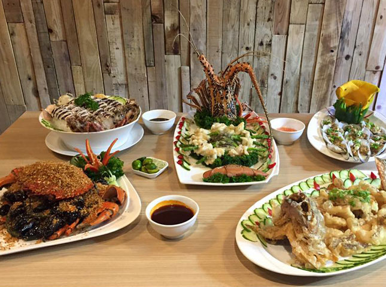
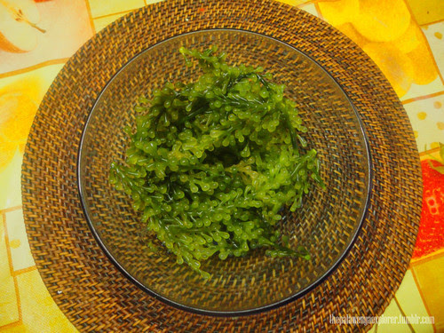
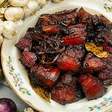

These aren't your average peanut brittle! Siquijor's peanut balls are a delightful combination of crunchy, caramelized peanuts formed into small, bite-sized spheres. They offer a perfect balance of sweet and salty, with a satisfying crunch. A popular pasalubong (souvenir gift), they're a must-try for anyone with a sweet tooth visiting the island. You'll find them sold in small stalls and shops around Siquijor.
A sweet, slightly dense bread roll, Pan Bisaya is a local favorite in Siquijor. It's not overly sweet, making it a perfect accompaniment to coffee or a light snack. Often enjoyed plain, its subtly sweet flavor and satisfying texture make it a comforting treat. Look for it in local bakeries and markets – it's a true taste of Siquijor.
Chicken Tinola is a flavorful broth-based soup with ginger, papaya, and chili leaves. It is a comforting dish often served with rice.
Sutukil is a seafood dish where fish is prepared in three ways: grilled, stewed, and served raw in vinegar. This dish highlights the fresh flavors of the ocean.
Lato, also known as sea grapes, is a type of edible seaweed with a refreshing, salty taste. It is commonly served with vinegar and pairs well with seafood.
Humba is a sweet and savory braised pork dish cooked with soy sauce, sugar, and banana blossoms. It is similar to adobo but has a richer and slightly caramelized flavor